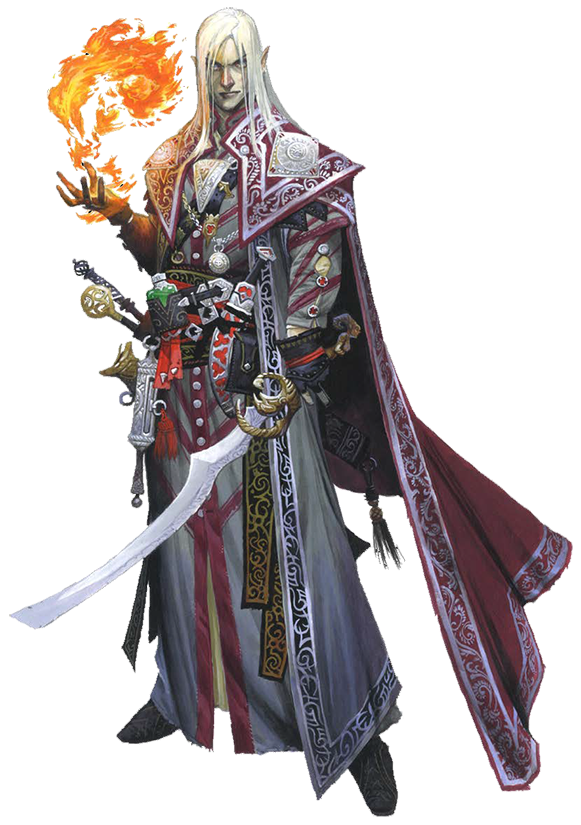

Archives of Nethys


Legacy Content

Source Secrets of Magic pg. 35
Combining the physicality and technique of a warrior with the ability to cast arcane magic, you seek to perfect the art of fusing spell and strike. While the hefty tome you carry reflects hours conducting arcane research, your enemies need no reminder of your training. They recognize it as you take them down.
Key Attribute: STRENGTH OR DEXTERITY
At 1st level, your class gives you an ability boost to your choice of Strength or Dexterity.
Hit Points: 8 plus your Constitution modifier
You increase your maximum number of HP by this number at 1st level and every level thereafter.
Roleplaying the Magus
During Combat Encounters...
You channel spells through your weapon or body to hit enemies with a powerful attack and spell combination. Because your spells per day are limited, you often rely on trusty, carefully chosen cantrips and focus spells. When necessary, you know how to win a fight without magic.During Social Encounters...
Your education and breadth of experience make you knowledgeable about many subjects. You can contribute information related to your scholarly pursuits, especially about magic.While Exploring...
Your flexibility means you might look for magical auras, remain on guard, or even sneak around. Your ability to fill different niches means that your role often depends on the talents of the other members of your group.In Downtime...
You split your time between magical pursuits, like researching spells and crafting items, and martial practice, such as retraining combat abilities to learn new techniques.You Might...
- Continually refine your spell and item selections to suit your personal style, or prepare battle plans and spell lists for a variety of situations.
- Socialize with scholars of magic and veteran combatants alike, seeking out masters to teach you new techniques.
- Overreach with ambitious plans that pull you in too many directions at once.
Others Probably...
- Wonder how you can keep on top of two disparate disciplines at the same time.
- Believe you have a broad enough skill set to take care of yourself in most situations.
Initial Proficiencies
At 1st level, you gain the listed proficiency ranks in the following statistics. You are untrained in anything not listed unless you gain a better proficiency rank in some other way.Perception
Trained in PerceptionSaving Throws
Expert in FortitudeTrained in Reflex
Expert in Will
Skills
Trained in ArcanaTrained in a number of additional skills equal to 2 plus your Intelligence modifier
Attacks
Trained in simple weaponsTrained in martial weapons
Trained in unarmed attacks
Defenses
Trained in light armorTrained in medium armor
Trained in unarmored defense
Spells
Trained in arcane spell attacksTrained in arcane spell DCs
Class Features
You gain these features as a Magus. Abilities gained at higher levels list the levels at which you gain them next to the features' names.Ancestry And Background
In addition to what you get from your class at 1st level, you have the benefits of your selected ancestry and background.Initial Proficiencies
At 1st level, you gain a number of proficiencies that represent your basic training. These proficiencies are noted at the start of this class.Arcane Spellcasting
You study spells so you can combine them with your attacks or solve problems that strength of arms alone can't handle. You can cast arcane spells using the Cast a Spell activity, and you can supply material, somatic, and verbal components when casting spells. Because you're a magus, you can draw replacement sigils with the tip of your weapon or your free hand for spells requiring material components, replacing them with somatic components instead of needing a material component pouch.At 1st level, you can prepare one 1st-level spell and five cantrips each morning from the spells in your spellbook (see below). Prepared spells remain available to you until you cast them or until you prepare your spells again. The number of spells you can prepare is called your spell slots.
As you increase in level as a magus, your number of spell slots and the highest level of spells you can cast from spell slots increase, shown in Table 2–2: Magus Spells per Day. Because you split your focus between physical training and magical scholarship, you have no more than two spell slots of your highest level and, if you can cast 2nd-level spells or higher, two spell slots of 1 level lower than your highest spell level. For anything that requires the ability to cast spells of a certain level that's lower than the highest slots you have, you still qualify even if you no longer have spell slots at those levels.
Some of your spells require you to attempt a spell attack roll to see how effective they are, or have your enemies roll against your spell DC (typically by attempting a saving throw). Your spell attack rolls and spell DCs use your Intelligence modifier. Details on calculating these statistics appear in Spell Attack Roll.
Heightening Spells When you get spell slots of 2nd level and higher, you can fill those slots with stronger versions of lower-level spells. This increases the spell's level, heightening it to match the spell slot. Many spells have specific improvements when they're heightened to certain levels. Cantrips A cantrip is a special type of spell that doesn't use spell slots. You can cast a cantrip at will, any number of times per day. A cantrip is always automatically heightened to half your level rounded up—this is usually equal to the highest level of spell you can cast as a magus. For example, as a 1st-level magus, your cantrips are 1st-level spells, and as a 5th-level magus, your cantrips are 3rd-level spells. Spellbook Every arcane spell has a written version, usually recorded in a spellbook. You start with a spellbook worth 10 sp or less, which you receive for free and must study to prepare your spells each day. The spellbook contains your choice of eight arcane cantrips and four 1st-level arcane spells. You choose these from the common spells on the arcane spell list or from other arcane spells you gain access to. Your spellbook's form and name are up to you. It might be anything from a sturdy book with a secure latch entitled Theses on the Stratagems of Supernatural Warfare to a tattered collection of training pamphlets with your name scrawled on the cover.
Each time you gain a level, you add two more arcane spells to your spellbook, of any level of spell you can cast. You can also use the Arcana skill to add other spells that you find in your adventures (see Learn a Spell). Though you lose some lower spell slots as you increase in level, you keep the spells in your spellbook and can prepare them in your higher-level slots as normal.
If you have a spellbook from multiple sources (such as being a magus with the Wizard Dedication feat), you can use the same spellbook for all your spells.
Spellstrike
You've learned the fundamental magus technique that lets you combine magical and physical attacks together. You gain the Spellstrike activity.Spellstrike [two-actions]
Magus
Source Secrets of Magic pg. 37
Frequency until recharged (see below)
You channel a spell into a punch or sword thrust to deliver a combined attack. You cast a spell that takes 1 or 2 actions to cast and requires either a spell attack roll or a saving throw. You imbue its effects into an attack instead of executing the spell normally. Make a melee Strike with a weapon or unarmed attack. This counts as two attacks for your multiple attack penalty, but you don’t apply the penalty until after you’ve completed the Spellstrike. The infusion of spell energy grants your Strike the arcane trait, making it magical. If the spell required a spell attack roll, use your Strike’s results to determine the effects of both the Strike and the spell. If it required a save, the target of the Strike rolls its saving throw normally, though if your Strike was a critical failure, the target is unaffected.
After you use Spellstrike, you can’t do so again until you recharge your Spellstrike as a single action, which has the concentrate trait. You also recharge your Spellstrike when you cast a conflux spell that takes at least 1 action to cast; casting a focus spell of another type doesn’t recharge your Spellstrike. Spellstrike Specifics
Though the base Spellstrike rules cover most spells, various modifications apply to more complicated spells when loaded into your fist, blade, or other attack.
One Target: The spell targets only the target of your Strike, even if it normally allows more targets. This includes area spells, which only the target attempts a saving throw against. Any ongoing effects of the area, such as the difficult terrain from scatter scree, affect only the target’s space. Some feats let you affect more creatures.
Reach: The coupled spell affects the target using the reach of the weapon or unarmed attack you make your Spellstrike with. For instance, gouging claw would affect a creature beyond the reach of your hand if you used a weapon with reach, and frostbite would affect only a creature in your weapon’s reach, even though the spell’s range is longer.
Ancillary Effects: Your spell still has any non-targeted effects that might affect creatures other than the target, as well as any ongoing effects starting from the moment you hit with the Strike. For example, scatter scree would still create difficult terrain in the target’s space (as mentioned above) and tangle vine’s circumstance penalty would last for its normal duration. The spell takes effect after the Strike deals damage; if the Strike has other special effects, the GM determines whether they happen before or after the spell.
Multiple Defenses: Any additional rolls after the initial spell attack still happen normally, such as the Fortitude save attempted by the target of a disintegrate spell. Similarly, a spell that allows you to attack with it again on subsequent rounds would only combine a Strike with its initial attack roll, not with any later ones.
Invalid or Immune Target: If the target you hit wouldn't be a valid target for the spell, the spell is still expended but doesn't affect the target. If the target is immune to your attack but not the spell, it can still be affected by the spell.
Variable Actions: Some spells have different effects based on the number of actions you spend to cast them. You choose whether to use the effects of the 1- or 2-action version of the spell when you use Spellstrike. A spell has to take exactly 1 or 2 actions; you can't use Spellstrike with a spell that takes a free action, reaction, or 3 or more actions.
Spellshape: You typically can’t use spellshape with Spellstrike because spellshape actions require the next action you take to be Cast a Spell, and Spellstrike is a combined activity that doesn’t qualify.
Arcane Cascade
After you wield magic, you can enter a special stance to make your attacks more effective.Arcane Cascade [one-action]
Concentrate Magus Stance
Source Secrets of Magic pg. 38
Requirements You used your most recent action this turn to Cast a Spell or make a Spellstrike. You need to meet this requirement only to enter the stance, not to remain in it.
You divert a portion of the spell's magical power and keep it cycling through your body and weapon using specialized forms, breathing, or footwork. While you're in the stance, your melee Strikes deal 1 extra force damage. This damage increases to 2 if you have weapon specialization and 3 if you have greater weapon specialization. Any Strike that benefits from this damage gains the arcane trait, making it magical.
If your most recent spell before entering the stance was one that can deal damage, the damage from the stance is instead the same type that spell could deal (or one type of your choice if the spell could deal multiple types of damage).
Hybrid Study
Your extensive physical training and carefully chosen magic combine to form a unique and dangerous fighting style that's more than the sum of its parts. You choose one field of hybrid study to represent your particular combination of skills. Your hybrid study gives you a special ability, usually tied to Spellstrike or Arcane Cascade, and it determines your initial conflux spell. Hybrid Studies can be found here.
Conflux Spells
You learn a conflux spell from your hybrid study, and you can cast additional conflux spells by selecting certain feats. Conflux spells are magus-specific spells created for combat and are a type of focus spell. It costs 1 Focus Point to cast a focus spell, and you start with a focus pool of 1 Focus Point. You refill your focus pool during your daily preparations, and you can regain 1 Focus Point by spending 10 minutes using the Refocus activity to both study your spellbook and perform a physical regimen.
Focus spells are automatically heightened to half your level rounded up. Focus spells don't require spell slots, nor can you cast them using spell slots. Taking feats can give you more focus spells and increase the size of your focus pool, though your focus pool can never hold more than 3 points. The full rules can be found here.
Magus FeatsLevel 2
At 2nd level and every even-numbered level thereafter, you gain a magus class feat.
Skill FeatsLevel 2
At 2nd level and every 2 levels thereafter, you gain a skill feat. You must be trained or better in the corresponding skill to select a skill feat.
General FeatsLevel 3
At 3rd level and every 4 levels thereafter, you gain a general feat.
Skill IncreasesLevel 3
At 3rd level and every 2 levels thereafter, you gain a skill increase. You can use this skill increase to become trained in one skill you're untrained in, or become an expert in one skill in which you are already trained.
At 7th level, you can use skill increases to become a master in a skill in which you're already an expert, and at 15th level, you can use them to become legendary in a skill in which you're already a master.
Ability BoostsLevel 5
At 5th level and every 5 levels thereafter, you boost four different ability scores. You can use these ability boosts to increase your ability scores above 18. Boosting an ability score increases it by 1 if it's already 18 or above, or by 2 if it starts out below 18.
Ancestry FeatsLevel 5
In addition to the ancestry feat you started with, you gain an ancestry feat at 5th level and every 4 levels thereafter.
Lightning ReflexesLevel 5
Your reflexes are lightning fast. Your proficiency rank for Reflex saves increases to expert.
Weapon ExpertiseLevel 5
You've dedicated yourself to learning the intricacies of your weapons. Your proficiency ranks for simple weapons, martial weapons, and unarmed attacks increase to expert.
Studious SpellsLevel 7
Your hybrid study grants you additional spells that can enhance your power in combat. You gain two special 2nd-level studious spell slots, which can be used to prepare gecko grip, sure strike, water breathing, and an additional spell depending on your hybrid study. You add any spells from this class feature to your spellbook. At 11th level, the extra slots increase to 3rd level and you add haste and an additional spell depending on your hybrid study. At 13th level, the extra slots increase to 4th level and you add fly and an additional spell depending on your hybrid study.
See specific hybrid studies for more information.
Weapon SpecializationLevel 7
You can inflict greater injuries with your favored weapons. You deal 2 additional damage with weapons and unarmed attacks in which you're an expert. This damage increases to 3 if you're a master, and 4 if you're legendary.
AlertnessLevel 9
You remain alert to threats around you. Your proficiency rank for Perception increases to expert.
Expert SpellcasterLevel 9
Your fundamental understanding of magic improves, making your spells harder to resist. Your proficiency ranks for arcane spell attack rolls and spell DCs increase to expert.
ResolveLevel 9
You've steeled your mind with resolve. Your proficiency rank for Will saves increases to master. When you roll a success on a Will save, you get a critical success instead.
Medium Armor ExpertiseLevel 11
You've learned to defend yourself better against incoming attacks. Your proficiency ranks for light armor, medium armor, and unarmored defense increase to expert.
Weapon MasteryLevel 13
You fully understand your weapons. Your proficiency ranks for simple weapons, martial weapons, and unarmed attacks increase to master.
Greater Weapon SpecializationLevel 15
Your damage from weapon specialization increases to 4 with weapons and unarmed attacks in which you're an expert, 6 if you're a master, and 8 if you're legendary.
JuggernautLevel 15
Your body is accustomed to physical hardship and resistant to a wide range of ailments. Your proficiency rank for Fortitude saves increases to master. When you roll a success on a Fortitude save, you get a critical success instead.
Master SpellcasterLevel 17
You fortify your spells with masterful prowess. Your proficiency ranks for arcane spell attack rolls and spell DCs increase to master.
Medium Armor MasteryLevel 17
Your skill with light and medium armor improves, increasing your ability to avoid blows. Your proficiency ranks for light and medium armor, as well as for unarmed defense, increase to master.
Double Spellstrike Level 19
You can extend the magic of spells you store with Spellstrike. After you make a Spellstrike with a spell cast from a spell slot, you retain an echo of the spell, stored in your body. The next time you Spellstrike, you can cast the same spell again without expending a spell slot.
If you choose to cast a different spell with Spellstrike, or you go 1 minute without using the stored spell, the stored spell dissipates harmlessly.
Spellbook Every arcane spell has a written version, usually recorded in a spellbook. You start with a spellbook worth 10 sp or less, which you receive for free and must study to prepare your spells each day. The spellbook contains your choice of eight arcane cantrips and four 1st-level arcane spells. You choose these from the common spells on the arcane spell list or from other arcane spells you gain access to. Your spellbook's form and name are up to you. It might be anything from a sturdy book with a secure latch entitled Theses on the Stratagems of Supernatural Warfare to a tattered collection of training pamphlets with your name scrawled on the cover.
Each time you gain a level, you add two more arcane spells to your spellbook, of any level of spell you can cast. You can also use the Arcana skill to add other spells that you find in your adventures (see Learn a Spell). Though you lose some lower spell slots as you increase in level, you keep the spells in your spellbook and can prepare them in your higher-level slots as normal.
If you have a spellbook from multiple sources (such as being a magus with the Wizard Dedication feat), you can use the same spellbook for all your spells.
Spellstrike
You've learned the fundamental magus technique that lets you combine magical and physical attacks together. You gain the Spellstrike activity.Spellstrike [two-actions]
Magus
Source Secrets of Magic pg. 37
Frequency until recharged (see below)
You channel a spell into a punch or sword thrust to deliver a combined attack. You cast a spell that takes 1 or 2 actions to cast and requires either a spell attack roll or a saving throw. You imbue its effects into an attack instead of executing the spell normally. Make a melee Strike with a weapon or unarmed attack. This counts as two attacks for your multiple attack penalty, but you don’t apply the penalty until after you’ve completed the Spellstrike. The infusion of spell energy grants your Strike the arcane trait, making it magical. If the spell required a spell attack roll, use your Strike’s results to determine the effects of both the Strike and the spell. If it required a save, the target of the Strike rolls its saving throw normally, though if your Strike was a critical failure, the target is unaffected.
After you use Spellstrike, you can’t do so again until you recharge your Spellstrike as a single action, which has the concentrate trait. You also recharge your Spellstrike when you cast a conflux spell that takes at least 1 action to cast; casting a focus spell of another type doesn’t recharge your Spellstrike. Spellstrike Specifics
Though the base Spellstrike rules cover most spells, various modifications apply to more complicated spells when loaded into your fist, blade, or other attack.
One Target: The spell targets only the target of your Strike, even if it normally allows more targets. This includes area spells, which only the target attempts a saving throw against. Any ongoing effects of the area, such as the difficult terrain from scatter scree, affect only the target’s space. Some feats let you affect more creatures.
Reach: The coupled spell affects the target using the reach of the weapon or unarmed attack you make your Spellstrike with. For instance, gouging claw would affect a creature beyond the reach of your hand if you used a weapon with reach, and frostbite would affect only a creature in your weapon’s reach, even though the spell’s range is longer.
Ancillary Effects: Your spell still has any non-targeted effects that might affect creatures other than the target, as well as any ongoing effects starting from the moment you hit with the Strike. For example, scatter scree would still create difficult terrain in the target’s space (as mentioned above) and tangle vine’s circumstance penalty would last for its normal duration. The spell takes effect after the Strike deals damage; if the Strike has other special effects, the GM determines whether they happen before or after the spell.
Multiple Defenses: Any additional rolls after the initial spell attack still happen normally, such as the Fortitude save attempted by the target of a disintegrate spell. Similarly, a spell that allows you to attack with it again on subsequent rounds would only combine a Strike with its initial attack roll, not with any later ones.
Invalid or Immune Target: If the target you hit wouldn't be a valid target for the spell, the spell is still expended but doesn't affect the target. If the target is immune to your attack but not the spell, it can still be affected by the spell.
Variable Actions: Some spells have different effects based on the number of actions you spend to cast them. You choose whether to use the effects of the 1- or 2-action version of the spell when you use Spellstrike. A spell has to take exactly 1 or 2 actions; you can't use Spellstrike with a spell that takes a free action, reaction, or 3 or more actions.
Spellshape: You typically can’t use spellshape with Spellstrike because spellshape actions require the next action you take to be Cast a Spell, and Spellstrike is a combined activity that doesn’t qualify.
Arcane Cascade
After you wield magic, you can enter a special stance to make your attacks more effective.Arcane Cascade [one-action]
Concentrate Magus Stance
Source Secrets of Magic pg. 38
Requirements You used your most recent action this turn to Cast a Spell or make a Spellstrike. You need to meet this requirement only to enter the stance, not to remain in it.
You divert a portion of the spell's magical power and keep it cycling through your body and weapon using specialized forms, breathing, or footwork. While you're in the stance, your melee Strikes deal 1 extra force damage. This damage increases to 2 if you have weapon specialization and 3 if you have greater weapon specialization. Any Strike that benefits from this damage gains the arcane trait, making it magical.
If your most recent spell before entering the stance was one that can deal damage, the damage from the stance is instead the same type that spell could deal (or one type of your choice if the spell could deal multiple types of damage).
Hybrid Study
Your extensive physical training and carefully chosen magic combine to form a unique and dangerous fighting style that's more than the sum of its parts. You choose one field of hybrid study to represent your particular combination of skills. Your hybrid study gives you a special ability, usually tied to Spellstrike or Arcane Cascade, and it determines your initial conflux spell. Hybrid Studies can be found here.
Conflux Spells
You learn a conflux spell from your hybrid study, and you can cast additional conflux spells by selecting certain feats. Conflux spells are magus-specific spells created for combat and are a type of focus spell. It costs 1 Focus Point to cast a focus spell, and you start with a focus pool of 1 Focus Point. You refill your focus pool during your daily preparations, and you can regain 1 Focus Point by spending 10 minutes using the Refocus activity to both study your spellbook and perform a physical regimen.
Focus spells are automatically heightened to half your level rounded up. Focus spells don't require spell slots, nor can you cast them using spell slots. Taking feats can give you more focus spells and increase the size of your focus pool, though your focus pool can never hold more than 3 points. The full rules can be found here.
Magus FeatsLevel 2
At 2nd level and every even-numbered level thereafter, you gain a magus class feat.
Skill FeatsLevel 2
At 2nd level and every 2 levels thereafter, you gain a skill feat. You must be trained or better in the corresponding skill to select a skill feat.
General FeatsLevel 3
At 3rd level and every 4 levels thereafter, you gain a general feat.
Skill IncreasesLevel 3
At 3rd level and every 2 levels thereafter, you gain a skill increase. You can use this skill increase to become trained in one skill you're untrained in, or become an expert in one skill in which you are already trained.
At 7th level, you can use skill increases to become a master in a skill in which you're already an expert, and at 15th level, you can use them to become legendary in a skill in which you're already a master.
Ability BoostsLevel 5
At 5th level and every 5 levels thereafter, you boost four different ability scores. You can use these ability boosts to increase your ability scores above 18. Boosting an ability score increases it by 1 if it's already 18 or above, or by 2 if it starts out below 18.
Ancestry FeatsLevel 5
In addition to the ancestry feat you started with, you gain an ancestry feat at 5th level and every 4 levels thereafter.
Lightning ReflexesLevel 5
Your reflexes are lightning fast. Your proficiency rank for Reflex saves increases to expert.
Weapon ExpertiseLevel 5
You've dedicated yourself to learning the intricacies of your weapons. Your proficiency ranks for simple weapons, martial weapons, and unarmed attacks increase to expert.
Studious SpellsLevel 7
Your hybrid study grants you additional spells that can enhance your power in combat. You gain two special 2nd-level studious spell slots, which can be used to prepare gecko grip, sure strike, water breathing, and an additional spell depending on your hybrid study. You add any spells from this class feature to your spellbook. At 11th level, the extra slots increase to 3rd level and you add haste and an additional spell depending on your hybrid study. At 13th level, the extra slots increase to 4th level and you add fly and an additional spell depending on your hybrid study.
See specific hybrid studies for more information.
Weapon SpecializationLevel 7
You can inflict greater injuries with your favored weapons. You deal 2 additional damage with weapons and unarmed attacks in which you're an expert. This damage increases to 3 if you're a master, and 4 if you're legendary.
AlertnessLevel 9
You remain alert to threats around you. Your proficiency rank for Perception increases to expert.
Expert SpellcasterLevel 9
Your fundamental understanding of magic improves, making your spells harder to resist. Your proficiency ranks for arcane spell attack rolls and spell DCs increase to expert.
ResolveLevel 9
You've steeled your mind with resolve. Your proficiency rank for Will saves increases to master. When you roll a success on a Will save, you get a critical success instead.
Medium Armor ExpertiseLevel 11
You've learned to defend yourself better against incoming attacks. Your proficiency ranks for light armor, medium armor, and unarmored defense increase to expert.
Weapon MasteryLevel 13
You fully understand your weapons. Your proficiency ranks for simple weapons, martial weapons, and unarmed attacks increase to master.
Greater Weapon SpecializationLevel 15
Your damage from weapon specialization increases to 4 with weapons and unarmed attacks in which you're an expert, 6 if you're a master, and 8 if you're legendary.
JuggernautLevel 15
Your body is accustomed to physical hardship and resistant to a wide range of ailments. Your proficiency rank for Fortitude saves increases to master. When you roll a success on a Fortitude save, you get a critical success instead.
Master SpellcasterLevel 17
You fortify your spells with masterful prowess. Your proficiency ranks for arcane spell attack rolls and spell DCs increase to master.
Medium Armor MasteryLevel 17
Your skill with light and medium armor improves, increasing your ability to avoid blows. Your proficiency ranks for light and medium armor, as well as for unarmed defense, increase to master.
Double Spellstrike Level 19
You can extend the magic of spells you store with Spellstrike. After you make a Spellstrike with a spell cast from a spell slot, you retain an echo of the spell, stored in your body. The next time you Spellstrike, you can cast the same spell again without expending a spell slot.
If you choose to cast a different spell with Spellstrike, or you go 1 minute without using the stored spell, the stored spell dissipates harmlessly.
Spellstrike [two-actions]
MagusSource Secrets of Magic pg. 37
Frequency until recharged (see below)
You channel a spell into a punch or sword thrust to deliver a combined attack. You cast a spell that takes 1 or 2 actions to cast and requires either a spell attack roll or a saving throw. You imbue its effects into an attack instead of executing the spell normally. Make a melee Strike with a weapon or unarmed attack. This counts as two attacks for your multiple attack penalty, but you don’t apply the penalty until after you’ve completed the Spellstrike. The infusion of spell energy grants your Strike the arcane trait, making it magical. If the spell required a spell attack roll, use your Strike’s results to determine the effects of both the Strike and the spell. If it required a save, the target of the Strike rolls its saving throw normally, though if your Strike was a critical failure, the target is unaffected.
After you use Spellstrike, you can’t do so again until you recharge your Spellstrike as a single action, which has the concentrate trait. You also recharge your Spellstrike when you cast a conflux spell that takes at least 1 action to cast; casting a focus spell of another type doesn’t recharge your Spellstrike.
Spellstrike Specifics
Though the base Spellstrike rules cover most spells, various modifications apply to more complicated spells when loaded into your fist, blade, or other attack.One Target: The spell targets only the target of your Strike, even if it normally allows more targets. This includes area spells, which only the target attempts a saving throw against. Any ongoing effects of the area, such as the difficult terrain from scatter scree, affect only the target’s space. Some feats let you affect more creatures.
Reach: The coupled spell affects the target using the reach of the weapon or unarmed attack you make your Spellstrike with. For instance, gouging claw would affect a creature beyond the reach of your hand if you used a weapon with reach, and frostbite would affect only a creature in your weapon’s reach, even though the spell’s range is longer.
Ancillary Effects: Your spell still has any non-targeted effects that might affect creatures other than the target, as well as any ongoing effects starting from the moment you hit with the Strike. For example, scatter scree would still create difficult terrain in the target’s space (as mentioned above) and tangle vine’s circumstance penalty would last for its normal duration. The spell takes effect after the Strike deals damage; if the Strike has other special effects, the GM determines whether they happen before or after the spell.
Multiple Defenses: Any additional rolls after the initial spell attack still happen normally, such as the Fortitude save attempted by the target of a disintegrate spell. Similarly, a spell that allows you to attack with it again on subsequent rounds would only combine a Strike with its initial attack roll, not with any later ones.
Invalid or Immune Target: If the target you hit wouldn't be a valid target for the spell, the spell is still expended but doesn't affect the target. If the target is immune to your attack but not the spell, it can still be affected by the spell.
Variable Actions: Some spells have different effects based on the number of actions you spend to cast them. You choose whether to use the effects of the 1- or 2-action version of the spell when you use Spellstrike. A spell has to take exactly 1 or 2 actions; you can't use Spellstrike with a spell that takes a free action, reaction, or 3 or more actions.
Spellshape: You typically can’t use spellshape with Spellstrike because spellshape actions require the next action you take to be Cast a Spell, and Spellstrike is a combined activity that doesn’t qualify.
Arcane Cascade [one-action]
Concentrate Magus StanceSource Secrets of Magic pg. 38
Requirements You used your most recent action this turn to Cast a Spell or make a Spellstrike. You need to meet this requirement only to enter the stance, not to remain in it.
You divert a portion of the spell's magical power and keep it cycling through your body and weapon using specialized forms, breathing, or footwork. While you're in the stance, your melee Strikes deal 1 extra force damage. This damage increases to 2 if you have weapon specialization and 3 if you have greater weapon specialization. Any Strike that benefits from this damage gains the arcane trait, making it magical.
If your most recent spell before entering the stance was one that can deal damage, the damage from the stance is instead the same type that spell could deal (or one type of your choice if the spell could deal multiple types of damage).
Shelyn's Corner
×Classic Feel
Classic Feel
Classic Feel
The classic look for the Archives of Nethys.
| Table |
| Data |
| More Data |
Book Feel
Book Feel
Book Feel
An alternative feel, based on the Rulebooks.
| Table |
| Data |
| More Data |
Round Feel
Round Feel
Round Feel
A rounded, modern look for the archives.
| Table |
| Data |
| More Data |
Slim Feel
Slim Feel
Slim Feel
A variant of the Round feel, more compact.
| Table |
| Data |
| More Data |